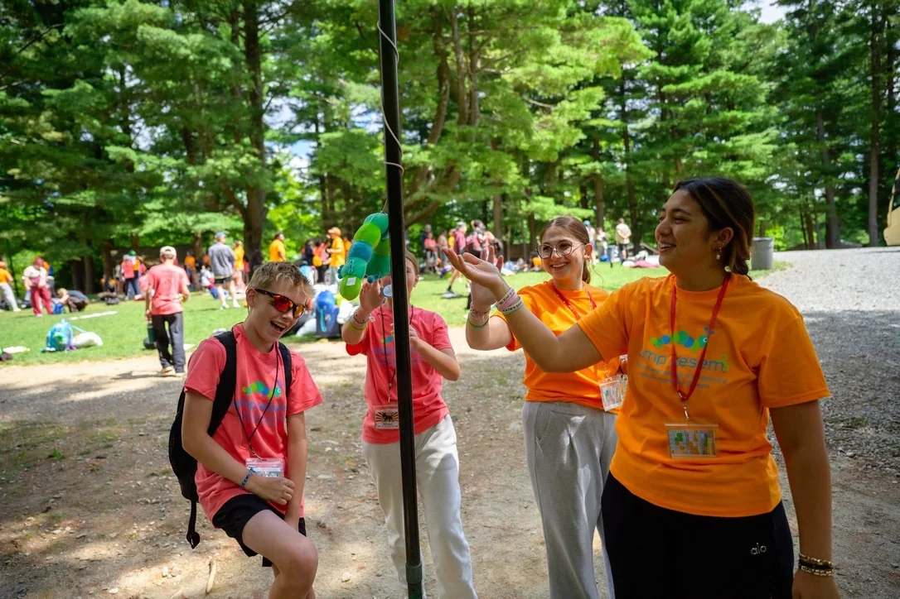
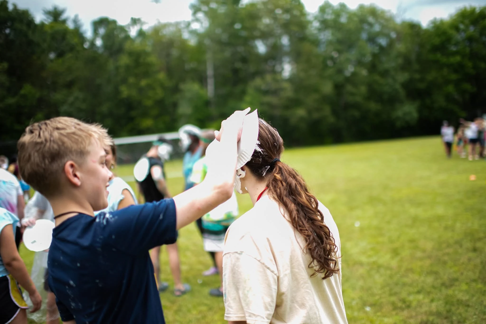
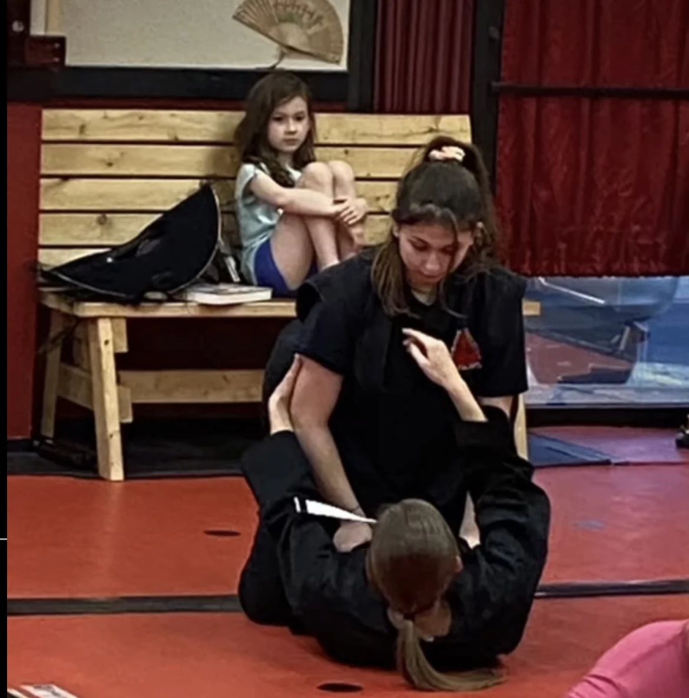
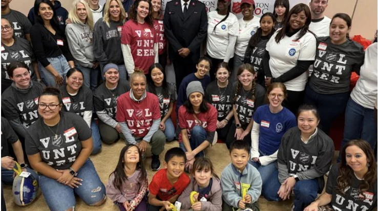
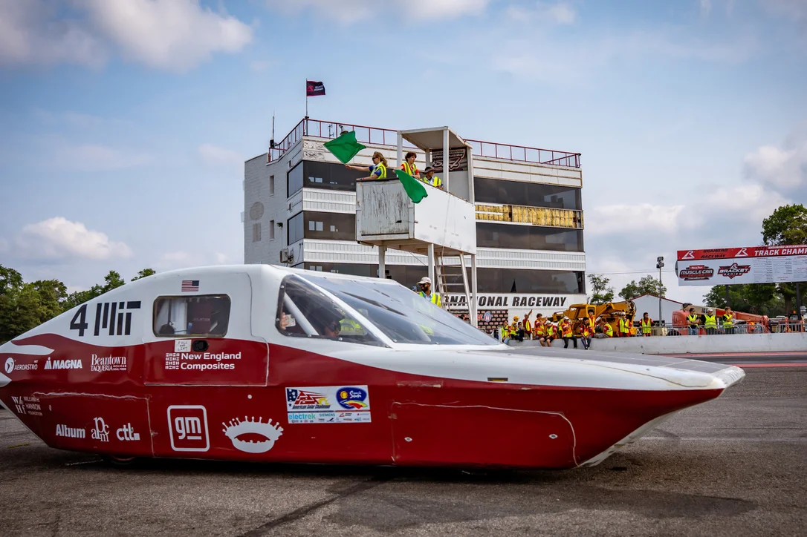

Leadership & service
I enjoy teaching, mentoring, and taking responsibility for the work that happens behind the scenes. These experiences are a big part of who I am, not just activities outside engineering.

Running a student-led STEM program
As Director of dynaMIT, I lead a 22-member student board and coordinate approximately 40 MIT volunteer mentors serving around 80 middle school students each year. The organization runs two summer engineering sessions designed to make STEM feel accessible and exciting.
I also handle much of the year-round operation: fundraising and sponsorships, nonprofit and MIT student-organization requirements, training, volunteer housing, facilities, meals, supplies, merchandise, and making sure the summer program happens. It feels like running a small nonprofit, and it's taught me to take ownership when many moving parts have to come together.
Camp Kesem
Supporting children impacted by a parent or guardian's cancer through mentorship, a welcoming community, and a chance to just be kids.


Teaching & community
Mechanics and Materials Teaching Assistant
At MIT, I lead office hours, help students work through core mechanics concepts, and give feedback on problem sets. I like the challenge of explaining a technical idea in a way that finally clicks.
Martial arts instructor
For several years, I taught self-defense to children, assisted with adult and women's workshops, and organized special programs. It was where I first grew comfortable leading a group and adjusting how I teach to different people.

Martial arts instruction and youth self-defense teaching
Thanksgiving meal service
Volunteering with the Salvation Army to support Thanksgiving meal service.

Solar car race · Safety and media
At the 2026 American Solar Challenge, I served as Safety Lead and Media Lead. I selected and shared team photography to tell the story of our car and the people behind it.

Photography: Cora Kenedy · American Solar Challenge
Connect
I'd be happy to talk about engineering projects, research, outreach, or internships.